9
Using the Pin Tool
Virtuoso Floorplanner includes the Pin Tool, which is a unified interface for all pin-related tasks, such as creating pins, resizing pins, planning and optimizing pins, editing pin attributes, and setting their location constraints.
Before launching the Pin Tool, ensure that the blocks in the design are placed. You can then use the Pin Tool to define the pin location constraints, alignments, and pin group guides, and set the pin attributes.
This chapter contains the following topics:
- Understanding the Pin Tool Interface
- Creating Pins
- Promoting Pins
- Resizing Pins
- Making Pins Electrically Aware
- Merging Pins
- Planning and Optimizing Pins
Understanding the Pin Tool Interface
Choose Floorplan – Pin Tool or click the Pin Tool button in the Floorplanning toolbar to launch the Pin Tool.
The Pin Browser appears, which lists all the top-level and level-1 pins that are available in the current layout design.
Menu Bar
The Pin Tool menu bar includes the following menus and commands:
|
Promotes pins from a lower level in a design hierarchy to a higher level. |
||
|
Positions pins of blocks in a manner that helps obtain the shortest possible net length at a particular level in the design. |
||
|
Lets you register and run pin resize estimator SKILL hook functions on all or selected pins in the cellview. |
||
|
Opens the Pin Browser. |
||
|
Opens the Label Browser. |
||
|
Opens the Net Shapes Browser. |
||
The Pin Tool Browser Windows
The Pin Tool lets you invoke the following Pin Tool browser windows:
- Pin Browser (default): Lists all pins that are available in the design.
- Label Browser: Lists all labels that are available in the design.
- Net Shapes Browser: Lists all net shapes that are available in the design.
Use the commands in the View menu to switch between these browser windows.
Pin Browser
The Pin Browser lists all the top-level and level-1 pins that are available in the current layout design. The interface includes a pins list and a few additional options to customize the display of pins. Use the Search box to filter the pins in the pins list.
Pins List
The pins list includes the following information about top-level and level-1 pins:
-
Pin Name/Instance Name: Specifies the pin or instance name. The pin entries are expressed in the format
termName:pinName:figName.
The pins list also includes names of iterated bus pins. By default, bus pins are in the collapsed state. To expand buses, select the required bus pins, right-click, and select Expand Selected Buses from the shortcut menu. To collapse buses, choose Collapse Selected Buses from the shortcut menu.
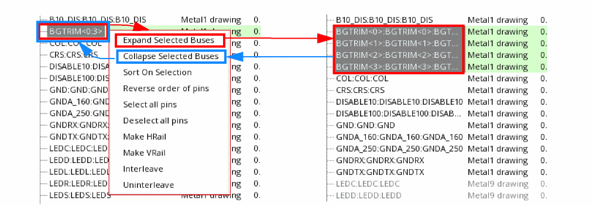 - LPP: Specifies the layer-purpose pair on which the pin is drawn. You can edit the value directly in the Pin Browser. Click Apply to move pins to the new LPP in the database, and therefore in layout canvas.
-
Width and Height: Specify the width and height of the pin. You can edit these values directly in the Pin Browser. Press
Enterto accept the new value. Click Apply to update the revised pin dimension in the layout canvas. -
Placement Status: Represents the placement status of the pins. You can reset the value directly in the Pin Browser. Valid values are:
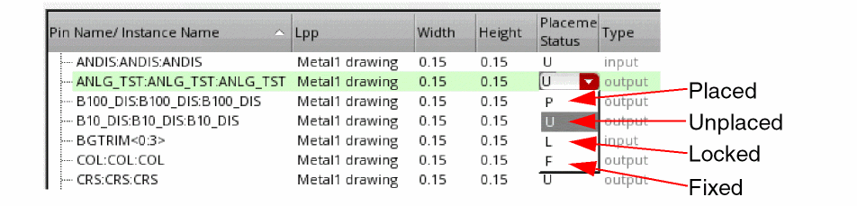 - Type: Specifies the pin type: input, output, or input/output. It is a read-only column.
-
Edge: Indicates the edge Alignment constraints set on the pins. The constraint is honored by various Virtuoso engines, such as the pin optimizer, pin planner, and constraint-aware editing engines.
You can change the Edge directly in the Pin Browser. Valid values are:
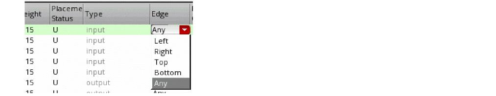 - Preserve Order: Indicates whether the pin order specified in the Alignment constraint must be honored during pin placement. If selected, pins on the same edge are placed in the same order as they are listed in the Pin Browser.
-
PGG: Specifies the name of the pin group guide that controls the placement of the pin. Pins that are associated with pin group guides cannot be edited directly in the Pin Browser, and are therefore displayed in gray.
Click the PGG name in the Pin Browser to open the Pin Group Guide form, make the required changes, apply the changes, and close the form. Click Refresh in the Pin Tool to update the values as per the changes made in the Pin Group Guide form. - Schematic: Specifies whether the top-level pins exist in the corresponding schematic cellview. This information is displayed only if the schematic view is open. The value is not editable.
Additional Options
-
Use the Search box to filter the pins in the Pin Browser. For example, if you type a string
Pin the Search box, only the pins with their names starting with letterPare listed. As you type additional strings, the search results are further refined. - View the total number of pins below the pins list. It is the sum of the top-level and level-1 pins in the list.
- Use the arrow buttons to change the order of the pins by moving them up or down in the list.
- Click Refresh when pin attributes have been changed outside the Pin Tool to replicate the changes in the Pin Browser.
- Click Apply to propagate the changes you made in the Pin Browser to the layout canvas.
- Click Close to close the Pin Tool.
Using the Pin Browser
You can perform the following tasks in the Pin Browser:
Select Pins
The Pin Browser lets you select pins in the pins list and edit their attributes. When you select a pin in the Pin Browser, the corresponding pin is highlighted in the layout canvas. Similarly, pins selected in the layout canvas are highlighted in the Pins Browser. To select all pins in the Pin Browser, right-click anywhere inside the Pin Browser and click Select all pins from the shortcut menu. After making the required edits to the pin attributes, choose Deselect all pins to clear selection.
Edit Pin Attributes
The Pin Browser supports in-situ editing of the following pin attributes for top-level and level-1 pins that are not associated with any pin group guide:
In the example below, the width of a pin is increased. The change is applied to the layout canvas dynamically, as shown below:
The edited pin attribute is displayed in blue in the Pin Browser. You must click Apply to commit the change, after which the formatting of the pin attribute is reset to default.
Shift key pressed and make the required change to a pin entry, for example, change the Width of one of the selected pins, and click Apply. The change is propagated to all selected pins.Sort Pins
By default, pins in the Pin Browser are sorted based on their Pin Name/Instance Name value. To sort by any other column, click the relevant column header; click again to reverse the sort order.
To sort a selected set of pins, right-click and choose Sort on selection from the shortcut menu. Choose Reverse order of pins to reverse the sort order.
Convert Pins to Rails
The Pin Browser lets you convert pins to either horizontal or vertical rails. The selected pin is stretched along the assigned edge to create a rail. Therefore pins assigned to the top or bottom edges are converted into VRails and pins assigned to the left or right edges are converted to HRails.
- Select the required pins in the Pin Browser
- Right-click to display the shortcut menu.
-
Choose either Make HRail or Make VRail.
Make HRail elongates the selected pins horizontally, from the left edge of the boundary to the right edge.
Make VRail elongates the selected pins vertically, from the top edge of the boundary to the bottom edge.
These options are also available on the Pin Planner tab of the Pin Placement form. For more information, see Pin Planning.
Interleave Bus Pins
You can interleave the bits of the selected bus pins in the Pin Browser and automatically apply an order constraint to constrain how the individual bits will be placed.
Before Interleave:
A<0:2> A1 B<0:2> B1 C<0:1> C1 D1 E1 F1
After Interleave:
A<0> B<0> C<0> A<1> B<1> C<1> A<2> B<2> A1 D1 B1 E1 C1 F1
The selected bus must contain at least one pin that is already assigned to an edge. Unplaced pins are automatically placed on the same edge and their bits are interleaved. Interleave does not work if the pins in the selected set are assigned to more than one edge or to no edge at all.
- Select the required pins in the Pin Browser. Ensure that the selected pins are assigned to valid edges.
- Right-click and choose Interleave. An order constraint is applied automatically to specify how the individual pins will be placed.
The Uninterleave command works with pins assigned to any number of edges. However, it does not move pins from one edge to another, but instead deals with the pins on each edge separately. Uninterleave does nothing with unplaced pins; they are ignored.
The Interleave and Uninterleave options are also available on the Pin Planner tab of the Pin Placement form. For more information, see Pin Planning.
Label Browser
Choose View – Labels to display the Label Browser. This browser displays information about all labels that are available in the current cellview. The Pin Tool supports cross-selection of labels between the Label Browser and the layout canvas.
The Label Browser includes the following information about labels:
- Text: Specifies the label name.
- LPP: Specifies the layer and purpose on which the label is drawn.
- Origin: Specifies the coordinates of the lower left corner of the label. The Origin and the Justification values together determine the label position. You can edit the value directly in the Label Browser. Click Apply to implement the change in the layout canvas.
- Height: Specifies the height of the label. You can edit the value directly in the Label Browser.
- Rotation: Specifies the orientation of the label. You can edit the value directly in the Label Browser.
-
Justification: Specifies the position of the label origin with respect to the label position. The following figure shows the various justification values that are available:
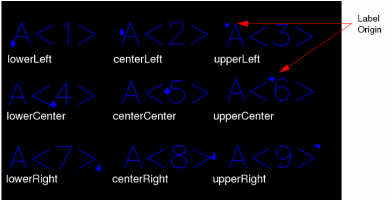You can edit the value directly in the Label Browser. -
Overbar: Indicates how the underscore characters in the label text strings must be displayed. When set to
false, underscores are displayed as underscores; when set totrue, underscores are displayed as overbars on the text string as shown in the following examples:
You can edit the value directly in the Label Browser. -
Drafting: When set to
true, prevents the label from being rotated more than 90 degrees. You can edit the value directly in the Label Browser. - Attached to Pin: Denotes whether the label is attached to any pin in the cellview.
- Pin Created for Label: Specifies whether pins have been created for the labels.
Additional Options
- Click Refresh to replicate changes in the Label Browser when label attributes have been changed outside the Pin Tool.
- Click Apply to replicate the changes you made to the Label Browser to the layout canvas.
Net Shapes Browser
Choose View – Net Shapes to display the Net Shapes Browser. This browser displays information about the nets in the current cellview. The Pin Tool supports cross-selection of nets between the Net Shapes Browser and the layout canvas.
The Net Shapes Browser includes:
- Net Name: Lists the net names.
- Pin Figures: Specifies the number of pin figures that are connected to the net.
These values cannot be edited in the Net Shapes Browser. Click Refresh when net attributes have been changed outside the Pin Tool to propagate the changes in the Net Shapes Browser.
Creating Pins
The Pin Tool lets you create new pins and customize their attributes. The Create menu lists the following commands to create pins from various sources:
Creating Pins
Choose Create – Create Pin to display the
For more information, see
Creating Pins from Labels
The Create Pin From Label form lets you create pins from labels and text displays in the layout cellview. The Pin Tool lets you search down the hierarchy for labels, but creates pins only at the top level. The tool searches for shapes and creates pins for labels with their origins overlapping these shapes. You can specify the pin dimensions and the layer on which the pins must be created. The generated pins are centered on the origin of the label or text display from which they are derived, and have terminal names matching the labels or text displays.
To create pins from labels, choose Create – Create Pins From Labels to display the Create Pin From Label form. The form is divided into the following sections:
Step 1: Define the Scope of Search
- Select either Cellview or Selected in the Scope section to specify the target labels.
-
Specify the required LPP Filter to restrict the search only to specific layer-purpose pairs. All other LPPs are ignored. Example:
(metal2 drawing) - You can choose to Consider Instance Labels in the search results.
Step 2: Search for Shapes
- Specify the Search Depth, which indicates the level up to which shapes must be searched. For example, if Search Depth is set to 4, then levels 0 through 4 are searched for the required shapes. The default value is 0, which refers to the top-level (level 0).
- Specify the shape that must be used for pin creation - First or Largest. First indicates that the first shape that matches the specified criteria must be used. Therefore, the search is stopped as soon as a suitable shape is found. When set to Largest, all matching shapes are retrieved; then the shape with the largest area is identified and used.
- Specify the layer property based on which the search results must be filtered out - Metal or Poly Layer or Same Label Layer.
- Select Apply Search Depth for Instance Labels to use the specified Search Depth for instance labels.
- Select Create Pin if Connectivity Exists to create pins only for the labels that are associated with existing nets, terms, or pins in the current cellview. All other labels are ignored.
Step 3: Create Pins
-
Specify the Pin Size by choosing one of the following options:
-
Auto: Creates square pins inside the shape. The smaller dimension (width, height) is chosen as the pin side of the square pins. Pins are created along the edge of the PR boundary, so that they are accessible for defining connectivity.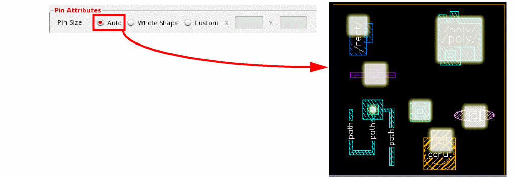
-
Whole Shape: Creates pins of the same shape as the labels.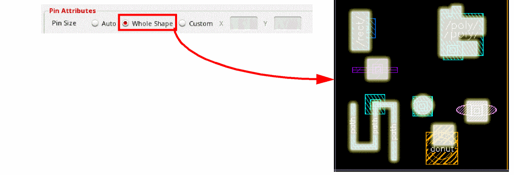
-
Custom (X and Y values): Lets you specify the size of the pins by specifying the width and height values. The same size is applied to all output pins.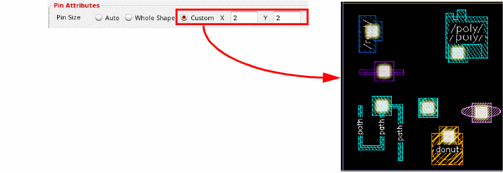
-
Auto: Creates square pins inside the shape. The smaller dimension (width, height) is chosen as the pin side of the square pins. Pins are created along the edge of the PR boundary, so that they are accessible for defining connectivity.
- Specify the Pin Layer by choosing one of the following options:
- Select Attach Label to the Pin to attach the labels to their corresponding pins.
Step 4: Specify Additional Pin Parameters
-
Virtual Connect
- Select Create Whole Shape Pin for Labels in the Power section to create power pins of the same shape as their corresponding labels. Click Define to display a list of labels. Select the labels for which power pins must be created.
- Click Show in the Preview section to see a preview of the pins that would be created.
- Click Hide to close the preview.
- Click OK to create the pins.
Consider the following design that contains labels of different shapes. These labels are listed in the Label Browser.
The following images show the result of creating pins from the above labels:
Creating Pins from Net Shapes
Use the Create Pin From Net Shapes form to create pins from existing net shapes in the layout cellview. Only top-level pins can be created using this method. The Pin Tool searches for the target net shapes in the current cellview, creates new pins on top of these target net shapes, and assigns connectivity to these new pins.
Select Create – Create Pin From Net Shapes to display the Create Pin From Net Shapes form. The form is divided into the following sections:
To create pins from net shapes:
- In the Net in section, select either CellView or Selected to specify whether net shapes must be searched in all or selected nets in the current cellview.
- Select Consider Net Shape on Routing Layers Only to restrict the search to the net shapes that are located on routing layers.
-
Select Create Pin on Top Layer Only to create pins only on the top layer shape. This option is useful when multiple shapes of the same net have different layers, and you want to create pins only on the top layer shapes. For example, if there are two net shapes
Aon metal layersM2andM4, then pins are created only on the highest metal layerM4. - Select Create Pin on Connected Shapes to restrict the search to those net shapes that are connected to top-level nets.
- Select Consider Level-1 Connected Shapes to include net shapes that are connected to level-1 nets in the search. This option is available only when the design has level-1 shapes.
- Select Check for Duplicate Pins to check for existing pins with the same names, and to not create duplicates.
- Select Schematic Aware to ensure that pins are created only for those nets that have corresponding terminals in the schematic view. Pins are not created for internal nets.
- Select Create Label to create labels over pins. Click Options to display the Set Pin Label Text Style form. Use the options in this form to define pin label settings.
- In the Pin Layer section, select one of the following options to specify the LPP on which the pins must be created:
- In the Pin Connectivity section, set the routing preferences to one of the following:
- In the Preview section, click Show to see a preview of the pins. This is a visual depiction of how the pins would be created; actual pins are not created yet.
- Click Hide to close the preview.
- Click OK to create the pins.
Creating Pins Automatically
The Auto-Create Pins form provides options to search for net shapes in a design and create boundary and buried pins automatically on these net shapes.
- Select Create – Auto-Create Pins to display the Auto-Create Pins form.
- Set search options for net shapes as follows:
-
Set generic pin generation options as follows:
-
Schematic Aware: Specifies whether the tool must search for corresponding shapes in the schematic view before creating pins. For pins that do not have a schematic counterpart, a warning message is displayed and pins are not created.
-
Delete Pins: Deletes the existing pins in the layout canvas before generating new ones to avoid creating pins over existing pins. You can refine this by selecting one of the following settings:
- Auto Created (recommended): Deletes only those pins and associated metal shapes that were generated automatically by using the Auto-Create Pins form.
- All: Deletes all pins in the current cellview.
Environment Variables: deletePinCheckbox, deletePinSelection - Check for Duplicate Pins: Checks for the presence of any similar pins in the design. If this option is selected and a similar pin is found, then a duplicate pin is not created.
-
Schematic Aware: Specifies whether the tool must search for corresponding shapes in the schematic view before creating pins. For pins that do not have a schematic counterpart, a warning message is displayed and pins are not created.
-
Set either one or both of the following Signal Pin Generation options:
-
Boundary Shape Pin: Considers shapes that are abutted to or are straddling the PR boundary. Therefore, pins are created for the shapes that are touching or overlapping the PR boundary. For more information about straddling shapes, see Straddling Shapes.
The following settings specify the number of signal pins to be generated when multiple boundary shapes belong to the same net:-
Single: Creates a single boundary pin on the highest metal layer. For example, if there are five boundary shapes on metal layers 0 to 4, then a single pin is created on metal 4, which is the highest metal layer.
When the autoPinPathSpineAware environment variable is set tot, a highest layer pin island, which consists of overlapping boundary pins belonging to the same layer and net, is promoted to the highest metal layer. A corresponding boundary pin is created in the highest metal layer. This feature supports creation of only shape pins, and not square pins. -
Multiple: Provides the following layer selection options:
- Top Layer: Creates multiple boundary pins on the highest metal layer.
- User Layer: Lets you specify the layers on which boundary pins are to be created. By default, all layers are selected. Therefore, the same number of boundary pins as the number of boundary shapes are created in the same layers as the shapes.
The following image shows a signal boundary pin generated by the Auto-Create Pins tool.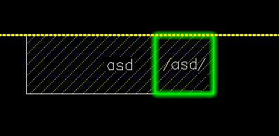When Boundary Shape Pin is selected, the Boundary Signal Pin Size options in the Pin Attributes section are enabled. These options control the pin shapes. -
Single: Creates a single boundary pin on the highest metal layer. For example, if there are five boundary shapes on metal layers 0 to 4, then a single pin is created on metal 4, which is the highest metal layer.
-
Buried Whole Shape Pin: Considers shapes that are completely inside the PR boundary.
The following settings specify the number of signal pins to be generated when multiple buried shapes belong to the same net:-
Single: Creates a single buried pin on the highest metal layer.
When the autoPinPathSpineAware environment variable is set tot, a highest layer pin island, which consists of overlapping buried pins belonging to the same layer and net, is promoted to the highest metal layer. A corresponding buried pin is created in the highest metal layer. This feature supports creation of only shape pins, and not square pins. -
Multiple: Provides the following layer selection options:
- Top Layer: Creates multiple buried pins on the highest metal layer.
- User Layer: Lets you specify the layers on which buried pins are to be created. By default, all layers are selected. Therefore, the same number of buried pins as the number of buried shapes are created in the same layers as the shapes.
When both Boundary Shape Pin and Buried Whole Shape Pin are selected, boundary pins take precedence. For example, when both settings are set to Single, a single boundary pin is created on the highest metal layer. -
Single: Creates a single buried pin on the highest metal layer.
-
Boundary Shape Pin: Considers shapes that are abutted to or are straddling the PR boundary. Therefore, pins are created for the shapes that are touching or overlapping the PR boundary. For more information about straddling shapes, see Straddling Shapes.
-
Set the required options in the Power Pin Generation section. Similar to signal shapes, you can choose to create pins for boundary shapes and buried shapes.
Power pins only support the multiple mode. Click Define to select the layers in which the pins must be generated. The selected layers are listed in the Layer Selection box.
Similar to signal pins, with both options selected, boundary pins take precedence.
The following image shows a power buried (whole shape) pin generated by the Auto-Create Pins tool.
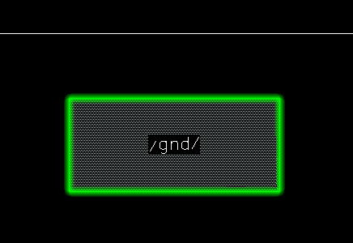 -
Set the following pin attributes:
Creates square pins. Rectangular and square path, pathseg, and polygonal shapes are recognized for pin creation. All other shapes are ignored, and a warning message is printed in the CIW.
Creates pins of the same shape as the corresponding net shapes. For example, square, rectangle, L-shaped, and path pins are supported.
Lets you choose a different purpose for the same layer. Pins are created in the specified LPP.
Lets you choose a different LPP on which pins must be created.
Specifies that the router must connect the pins internally, within the device.
Specifies that the router must connect the pins externally, at a higher level.
Applies the LEF58_MUSTJOINALLPORTS property to all auto-created pin terminals, which implies that the router must connect to all pins of the selected terminal.
Environment Variable:
pinConnectivityMode Uses the multiple patterning color engine to assign colors to the new pins based on their positions relative to the WSP tracks.
This option is available only when the coloringEngineEnabled environment variable is set to
t.Creates a metal shape under each auto-created level-1 (soft block) pin. The metal shapes are assigned to the same layers as the parent pin and to the
drawingpurpose. The metal shapes have the same dimensions as their parent pin shapes.The reason to create these metal shapes is to enable the Cadence® Assura™ RCX (Resistance, Capacitance, and Inductance Extraction) tool to detect any violations in the design.
- (Optional) Click Show to see a preview of how the settings would be applied to the design. Click Hide to close the preview.
- Click Apply to generate pins in the layout canvas. Click OK to create pins and close the form.
Pins are automatically generated in the layout canvas. Their placement status is set to Placed.
Straddling Shapes
Straddling shapes are the shapes that overlap the PR boundary. They are neither entirely inside nor outside the PR boundary. The Auto-Create Pins command recognizes such shapes and creates corresponding boundary pins.
In case of power and ground straddling shapes, whole-shape boundary pins are created.
In case of signal shapes, the Boundary Signal Pin Size setting and the direction of the layer that contains the straddling shape determine the shape of the auto-created pin.
-
When Boundary Signal Pin Size is set to Auto and the layer of the straddling shape layer is orthogonal to the PR boundary, a square-shaped boundary pin is created.
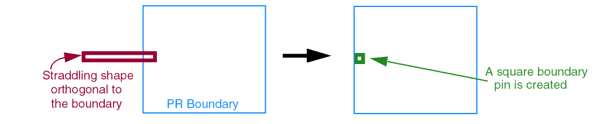 -
When Boundary Signal Pin Size is set to Auto and the layer of the straddling shape layer is parallel to the PR boundary, a whole-shape boundary pin (of the same dimensions as the source shape) is created.
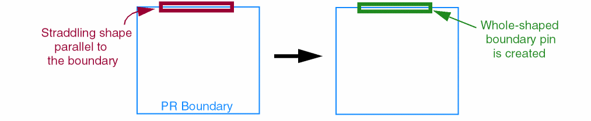 -
When Boundary Signal Pin Size is set to Auto and the layer of the straddling shape layer is both orthogonal and parallel to the PR boundary, a whole shape boundary pin is created.
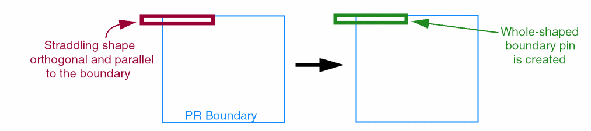 -
When Boundary Signal Pin Size is set to Whole Shape, a whole shape boundary pin is created. This is irrespective of whether the straddling shape layer is orthogonal or parallel to the PR boundary.
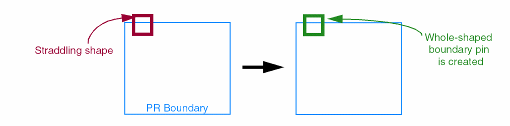
Promoting Pins
Use the Promote Pins form to promote pins from a lower level in a design hierarchy to a higher level, which can be the current level or lower than it. In the following figure, Level 0 is the current level. With Block A in the editable mode, a pin is promoted from Level 2 to Level 1.
To promote pins in the Pin Tool:
- Open the Pin Browser.
-
Choose Create – Promote Pins. The Promote Pins form appears.
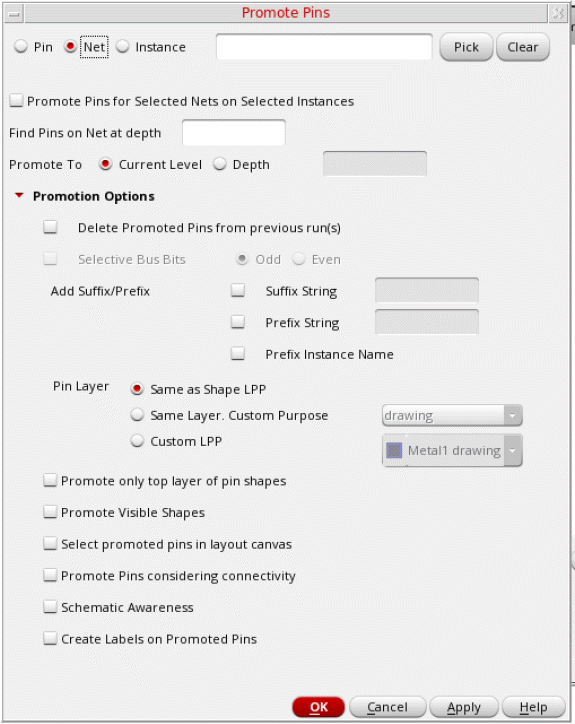 -
Select a mode in which you want to run promote pins.
Pin: Lets you specify a space-separated list of hierarchical pin names for promotion. The Pin mode supports regular expressions. For example,I0/in_*indicates pins with names that start within_and are in theI0instance, whileI0/.*indicates all pins in theI0instance. You can promote bus pins by specifying the collapsed bus name. For example,I0/in<0:3>can be specified to promote bus pinsin<0>,in<1>,in<2>, andin<3>from theI0instance.
Net: Lets you specify a space-separated list of top-level net names. Alternatively, you can select the required nets in the Navigator assistant and then click Pick to populate the net names in the adjacent text box. All the lower-level pins that are specified in Find Pins on Net at depth and connected to a top-level net are promoted. The Net mode does not support regular expressions.
Instance: Lets you specify a space-separated list of hierarchical instance names. Alternatively, you can select the required instances in the Navigator assistant and then click Pick to populate these names in the adjacent text box. All the pins inside the instance are promoted to a higher level.
At any point, click Clear to clear the list.
Environment Variables: promotePinNetChoice, promotePinNetList -
Promote Pins for Selected Nets on Selected Instances is applicable only in the Net mode. With the required nets specified, select this option to filter the pins further by selecting one or more instances. Only those pins in the specified nets that belong to the selected instances are selected for promotion.If Promote Pins for Selected Nets on Selected Instances is selected and there are no instances selected in the Navigator assistant or on the canvas, no pins are promoted.Environment Variable: promotePinOnNetForSelInsts
-
In the Find Pins on Net at depth field, specify the depth to which the tool must traverse to search for pins. For example, if the mode is set to Net, the net name is set to
gnd, and Find Pins on Net at depth is set to2, the command traverses the design hierarchy to find pins on netgndat level 2 to identify pins for promotion.
Environment Variables: promotePinOnNetPickLevel -
Set Promote To to either the level specified in Current Level or to the depth specified in Depth. The specified depth must be at a lower level than the current level and must be in the editable mode so that the selected pins can be copied to it.
Environment Variables: promoteToLevel, promoteToChoice - Click the expand button next to Promotion Options to display options to control the settings of the promoted pins. The settings in this section are optional. If not specified, pins are promoted using the default settings.
-
Select Delete Promoted Pins from previous run(s) to delete the pins that were promoted in the previous runs of the command.
Environment Variable: promoteDeleteOldPins -
Select Selective Bus Bits and specify whether Odd or Even bus pins must be promoted.
When a bus is selected for promotion, by default, all its constituent bus pins are promoted. Use this option to restrict promotion to specific bus pins.
Environment Variables: promoteSelectiveBusBits, promoteOddEvenChoice -
Choose Add Suffix/Prefix and specify the required Suffix String, Prefix String, or both. The specified prefix and suffix are added to the promoted pin names. In the Net mode, the suffix and prefix are added only to the promoted pin names, and not to the constituent net or term names.Environment Variables: promotePrefixChoice, promotePrefixString, promoteSuffixChoice, promoteSuffixString
-
Select Prefix Instance Name to add the pin source paths as prefix to the promoted pin names. For example, when you promote
pinAfromI6/I2/pinA, the new pin is named asI6_I2_pinA. -
In the Pin Layer section, select one of the following options to specify the LPP to which the pins must be promoted:
- Same as shape LPP (Default): Promotes pins to the LPP on which the source pins are located.
- Same layer, Custom Purpose: Uses the same layer as the source pins, but lets you specify the purpose.
- Custom LPP: Lets you specify both the layer and purpose to which pins must be promoted.
Environment Variables: promoteLayerChoice, promoteCustomPurpose, promoteCustomLPP -
(Optional) Select Promote only top layer of pin to promote only those pin figures that are available on the top layer.
Environment Variable: promoteTopLayerFig -
Select Promote Visible Shapes to promote pins from only those layers for which visibility has been turned on in the Palette assistant. For example, to promote only those pins that are present on layer
Metal2:- Click NV in the Palette assistant to turn off the visibility of all layers.
-
Turn on the visibility of layer
Metal2.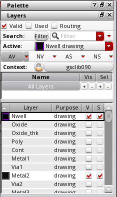 - Run the Promote Pins command with Promote Visible Shapes selected.
Environment Variables: promoteVisibleLPPs -
Select Select promoted pins in layout canvas to automatically select the promoted pins on the canvas. This option is available only when either Promote To is set to Current Level or Find Pins on Net at depth is set to
0.
Environment Variable: promoteSelectInCanvas -
The Promote Pins considering connectivity option is available only in the Pin and Instance modes. Select this option to honor any existing connectivity of pins to top-level nets during the promotion of these pins. The connections are retained in the promoted pins.
When Promote Pins considering connectivity is not selected, the promoted pins are connected to new nets that have the same net names as that of the lower level pin. It is recommended that you select this option to avoid any potential violations in Layout XL.
Environment Variable: promotePinConnectivity -
Select Schematic Awareness to promote only those pins that have a corresponding schematic counterpart at the top level.
Environment Variable: promoteSchematicAware -
Select Create Labels on Promoted Pins to create pin labels for promoted pins.
Environment Variable: promoteCreateLabelsOnPins - Click Apply.
I1, I2, and I3 that share the same master. When Pin A from the master is promoted, the instances are renamed as I1_A, I2_A, and I3_A.The following images depict an example of pin promotion by selecting nets.
Resizing Pins
You can create customized SKILL hooks to resize pins. The Resize Pins form lets you register and run such SKILL hook functions, also called the pin resize estimator SKILL functions, on all or selected pins in the cellview.
Here is a sample SKILL hook procedure to resize pins:
procedure( _pkfun1( mystr )
let( ()
info("In pkfunc mystr: %s \n" mystr)
))
procedure( pkResize1( topCv pinList)
let( ( inBlockPinList curBlock curPinList curPin outPinSizeList outBlockList outPinList width height )
info("####Entering pkResize1 topCv:%L pinList-%L \n" topCv->cellName pinList)
outPinList = list()
foreach(inBlockPinList pinList ;( inst pin1 pin2 ....)
curBlock = car(inBlockPinList)
curPinList = cdr(inBlockPinList)
outBlockList = list()
foreach(fig curPinList
bBox = fig~>bBox
width = caadr(bBox) - caar(bBox)
height = cadadr(bBox) - cadar(bBox)
outPinSizeList = list(fig 2*width 2*height)
outBlockList=cons( outPinSizeList outBlockList)
)
outBlockList = cons(curBlock outBlockList)
;info("outBlockList: %L \n" outBlockList)
outPinList = cons( outBlockList outPinList)
); end of foreach
outPinList
))
procedure( pkResize2( topCv pinList)
let( ( inBlockPinList curBlock curPinList curPin outPinSizeList outBlockList outPinList width height )
info("####Entering pkResize2 topCv:%L pinList-%L \n" topCv->cellName pinList)
outPinList = list()
foreach(inBlockPinList pinList ;( inst pin1 pin2 ....)
curBlock = car(inBlockPinList)
curPinList = cdr(inBlockPinList)
outBlockList = list()
foreach(fig curPinList
bBox = fig~>bBox
width = caadr(bBox) - caar(bBox)
height = cadadr(bBox) - cadar(bBox)
outPinSizeList = list(fig 1.5*width 1.5*height)
outBlockList=cons( outPinSizeList outBlockList)
)
outBlockList = cons(curBlock outBlockList)
;info("outBlockList: %L \n" outBlockList)
outPinList = cons( outBlockList outPinList)
); end of foreach
outPinList
))
Use the Resize Pins form to register, run, or deregister the pin resize estimator SKILL functions. Choose Place – Resize Pins to display the Resize Pins form.
Running a Pin Resize Estimator SKILL Function
-
Specify whether the procedure must be run on All or Selected pins.
-
Select the Resize function to be run. Resize function lists all registered pin resize functions.
- Click Apply to run the selected function. The pins in the design view are resized.
- Close the Resize Pins form.
- Click Refresh in the Pin Tool to update the pin attributes in the Pin Browser.
Registering a Pin Resize Estimator SKILL Function
Use the options in the Register/Deregister section to perform the following steps:
- Specify the File Path of the SKILL hook procedure file that contains the pin resize definitions. Alternatively, click Browse to select the required file and close the window.
-
Click Load to load the procedure.
-
Specify a Function Name and Nickname.
- Click Add to register the function. The function is listed in the Resize function list, from where you can run it.
- Click Apply to run the procedure.
- Close the Resize Pins form.
- Click Refresh in the Pin Tool to update the pin attributes in the Pin Browser.
Deregistering a Pin Resize Estimator SKILL Function
Use the options in the Register/DeRegister section to perform the following steps:
- Select the pin resize estimator SKILL function to be deregistered from the Deregister drop-down list.
- Click Delete.
- Close the Resize Pins form.
- Click Refresh in the Pin Tool to update the pin attributes in the Pin Browser.
- vfpPtAddPinResizeEstimator
- vfpPtGetPinResizeEstimators
- vfpPtLoadPinResizeFile
- vfpPtRemovePinResizeEstimator
- vfpPtRunPinResizeEstimator
The following images show how the above steps are performed:
You can use the Resize Pins form to deregister procedures. To do this, select the corresponding function name from the Deregister drop-down list and click Delete.
Making Pins Electrically Aware
(ICADVM20.1 EXL Only) In custom layout designs, while it is important for pins and net shapes to adhere to DRC rules, it is also important to ensure that they adhere to the electrical requirements of the designs. Pins should be sized keeping in mind the current carrying capacity of the nets.
The Pin Tool uses the capabilities of Layout Electrically Aware Design (EAD) to derive the electrical requirements of the design. Layout EAD, in turn, uses the electrical data produced by simulation in ADE Assembler and the parasitic information extracted from the layout view to analyze the design against predefined electromigration (EM) checks. For more information about running EM checks in Layout EAD, see
After deriving the electrical requirements for the design, the current specifications on a per-terminal basis and the permissible widths of pins and shapes are calculated.
The Electrically Aware Pin Sizing form lets you identify pins that do not meet electrical requirements and automatically fix these violations.
The following list provides a quick snapshot of the overall flow:

The Electrically Aware Pin Sizing form is divided into two sections to do the following tasks:
Finding and Viewing Under-Sized Pins
To find and view violating pins:
-
Choose Place – Electrically Aware Pin Sizing.
The Electrically Aware Pin Sizing form appears.
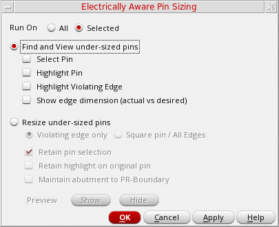 - Select one of the following Run On options to specify the pins on which the command is to be run:
- Select Find and View under-sized pins.
-
Select the required options for violation detection:
- Select Pin: Selects all the detected under-sized pins. You can perform further actions on the selected pins, for example, you can move or resize them. Any prior selections are removed.
- Highlight Pin: Highlights the under-sized pins for better visibility. Any prior highlights are removed.
-
Highlight Violating Edge: Highlights only the violating edge of under-sized pins.
In the following example, the top and bottom edges being shorter, are the violating edges. These edges are highlighted in red.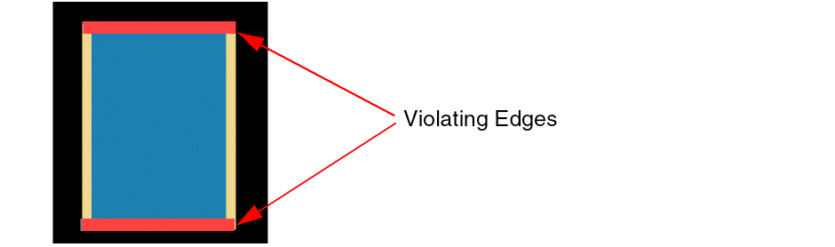 -
Show edge dimension (actual vs desired): Displays the current edge dimension and the desired electrically-aware dimension of the violating edge.
In the following example, the violating edge dimensions are displayed.0.4is the current pin width, whereas0.6is the desired pin width.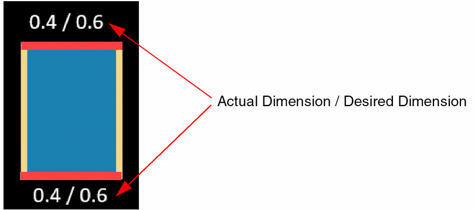
- Click OK.
All violating pins are listed in the Annotation Browser.
After viewing the violating pins, you can use the options in the Resize under-sized pins section of the Electrically Aware Pin Sizing form to re-size these pins and fix the violations. For more information, see Resizing Under-Sized Pins.
Resizing Under-Sized Pins
Use the options in the Electrically Aware Pin Sizing form to resize pins that do not meet the electrical requirements of the design. You can either first find and view the violating pins or directly resize them.
- Select one of the following Run On options to specify the pins on which the command has to run:
- Select Resize under-sized pins.
-
Select one of the following options:
-
Violating edge only: Resizes only the violating pin edges to the desired electrically-aware width. All other edges remain unaffected.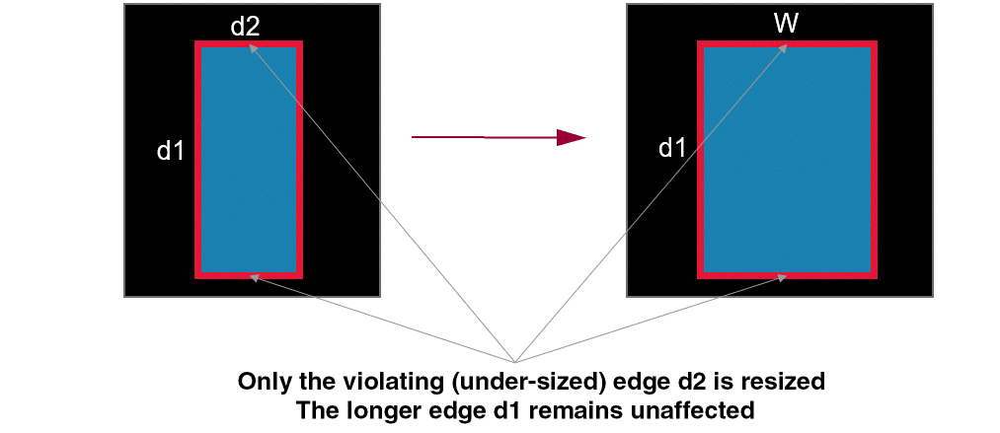
-
Square pin / All Edges: Resizes all edges to create square pins. For example, all edges of a rectangular pin are resized to the desired electrically-aware width (W) to create a square pin.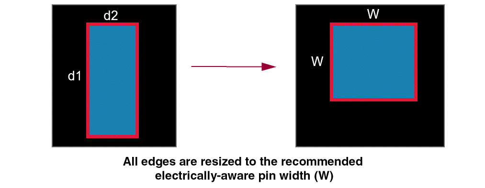
-
Violating edge only: Resizes only the violating pin edges to the desired electrically-aware width. All other edges remain unaffected.
- Select Retain pin selection to retain the selection of pins after they are resized.
- Select Retain highlight on original pin to retain the highlights on the pins that were selected for resize.
- Select Maintain abutment to PR-Boundary to ensure that pins that are initially abutted to the PR boundary retain the abutment even after they are resized. Pins that are not initially abutted remain at the same position by maintaining the center of the pins at the same location.
- Select Show in the Preview section to see a preview of the pins after they are resized before updating the layout.
- Verify that the changes are as per your requirements.
- Click Hide to close the preview.
- Click OK.
Pins in the design are resized as per your specifications.
Merging Pins
You can merge two or more overlapping rectangular, rectilinear, or path pin shapes into a single rectilinear shape. Pin shapes are merged based on their connectivity. This implies that overlapping pin shapes that are on the same layer and are connected to the same net can be merged. Non-overlapping pin shapes that cannot be merged form islands. The must-connect-all-pins property, also referred to as the must-join property, is applied to these islands and to the merged shapes.
The following example shows how overlapping pins that belong to the same layer and are connected to the same net, net C, are merged.
The merged pin shapes derive their names from the name of the connecting terminal. For example, when pin shapes C:C:C, C:C:C1, C:C:C2, and C:C:C3 are merged, the resultant pin shape is named C:C:C. In the absence of a pin shape with the same name as the terminal, for example, C:C:C, the name of any pin shape, for example, C:C:C1, is considered.
You can either apply the must connect all pins setting to the existing terminals or create new nets and terminals for each island and then apply the must connect all pins setting. You can also specify a suffix string for the new terminals. The default value is _MJ.
To merge pins by using the Pin Tool:
-
Select Tools – Merge and Must Connect Pins. The Merge and Must Connect Pins form appears.
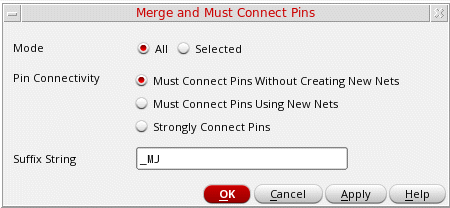 -
Select a Mode:
Related Environment Variable: mergePinsSelMode -
Set Pin Connectivity to one of the following values:
-
Must Connect Pins Without Creating New Nets (default): The connectivity of the pin shapes is retained. The
must connect all pinssetting is applied to the existing terminals. -
Must Connect Pins Using New Nets: New nets, terminals, and pins are created for each pin shape island. The new terminals are connected and are placed together in a
must connectgroup. - Strongly Connect Pins: A single connection point on a highly conductive metal is used to provide the required connectivity.
Related Environment Variable: mergePinsConnMode -
Must Connect Pins Without Creating New Nets (default): The connectivity of the pin shapes is retained. The
-
Specify the Suffix String to be added to the new nets, terminals, and pins that have been created on the merged pin islands. By default, the suffix added is
_MJ. This setting is applied only when Must connect pins using new nets is selected.
Related Environment Variable: mergePinsSuffix - Click OK.
Overlapping pins are merged and the Must Connect Terms setting is applied to the resultant non-overlapping pin shapes as specified.
Planning and Optimizing Pins
You can access the Pin Planner and Pin Optimizer from the Pin Tool.
-
Choose Place – Pin Placement to display the Pin Planner tab of the Pin Placement form. Use the options on this tab to assign or refine pin constraints, such as the side constraint (Left, Right, Top, Bottom), placement status (Fixed, Locked), and pin order.
You can then use the Pin Browser in the Pin Tool to refine the pin attributes, such as pin layer and size. For more information, see Pin Planning. - Choose Place – Pin Optimization to display the Pin Optimization tab of the Pin Placement form. Run Pin Optimizer to position pins of blocks in a manner that helps obtain the shortest possible net length at a particular level in the design. For more information, see Pin Optimization.
-
(ICADVM20.1 EXL Only) Choose Place – Optimize All Pins to optimize pins. You can run the command in the following modes:
- Top Down: Runs pin optimizer on the top-level first, followed by the lower levels. Top-level pins are optimized with respect to level-1 pins, level-1 pins are optimized with respect to level-2 pins, and so on.
-
Bottom Up: Runs pin optimizer on the bottom-most level first, followed by the higher levels.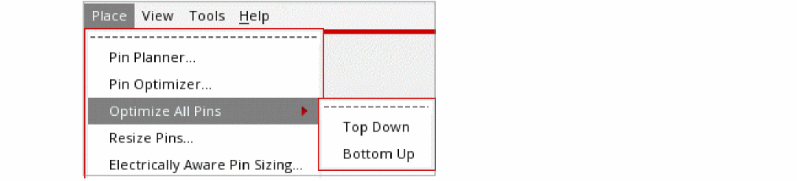
Return to top